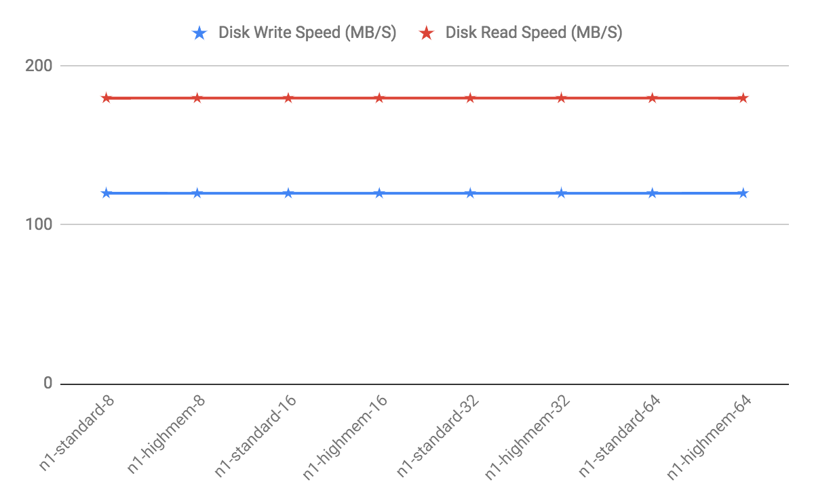

Platform Requirements
This topic describes the SynxDB 2 platform and operating system software requirements for deploying the software to on-premise hardware, or to public cloud services such as AWS, GCP, or Azure.
Operating System Requirements
SynxDB 2 runs on EL9-compatible, EL8-compatible, or EL7-compatible operating systems. This includes the following platforms:
- Red Hat Enterprise Linux 64-bit 9.x
- Red Hat Enterprise Linux 64-bit 8.7 or later. See the following Note.
- Rocky Linux 9.x
- Rocky Linux 8.7 or later
- Oracle Linux 64-bit 9, using the Red Hat Compatible Kernel (RHCK)
- Oracle Linux 64-bit 8, using the Red Hat Compatible Kernel (RHCK)
- AlmaLinux 9
- AlmaLinux 8
- CentOS 64-bit 7.x
- Red Hat Enterprise Linux 64-bit 7.x
Note If you use endpoint security software on your SynxDB hosts, it may affect database performance and stability. See About Endpoint Security Sofware for more information.
Caution A kernel issue in Red Hat Enterprise Linux 8.5 and 8.6 can cause I/O freezes and synchronization problems with XFS filesystems. This issue is fixed in RHEL 8.7. See RHEL8: xfs_buf deadlock between inode deletion and block allocation.
SynxDB server supports TLS version 1.2.
Software Dependencies
SynxDB 2 requires the following software packages, which are installed automatically as dependencies when you install the SynxDB RPM package):
- apr
- apr-util
- bash
- bzip2
- curl
- compat-openssl11 (EL 9)
- iproute
- krb5-devel
- libcgroup-tools (EL7 or EL 8)
- libcurl
- libevent (EL7 or EL 8)
- libuuid
- libxml2
- libyaml
- libzstd (EL 9)
- less
- net-tools
- openldap
- openssh
- openssh-client
- openssh-server
- openssl
- openssl-libs (EL7 or EL 8)
- perl
- python3 (EL 9)
- readline
- rsync
- sed
- tar
- which
- zip
- zlib
SynxDB 2 client software requires these operating system packages:
- apr
- bzip2
- libedit
- libyaml
- libevent (EL7 or EL 8)
- openssh
- zlib
SynxDB 2 uses Python 2.7.18, which is included with the product installation (and not installed as a package dependency).
Important SSL is supported only on the SynxDB master host system. It cannot be used on the segment host systems.
Important For all SynxDB host systems, if SELinux is enabled in
Enforcingmode then the SynxDB process and users can operate successfully in the defaultUnconfinedcontext. If increased confinement is required, then you must configure SELinux contexts, policies, and domains based on your security requirements, and test your configuration to ensure there is no functionality or performance impact to SynxDB. Similarly, you should either deactivate or configure firewall software as needed to allow communication between SynxDB hosts. See Deactivate or Configure SELinux.
Java
SynxDB 2 supports these Java versions for PL/Java and PXF:
- Open JDK 8 or Open JDK 11, available from AdoptOpenJDK
- Oracle JDK 8 or Oracle JDK 11
SynxDB Tools and Extensions Compatibility
Client Tools
Synx Data Labs releases a Clients tool package on various platforms that can be used to access SynxDB from a client system. The SynxDB 2 Clients tool package is supported on the following platforms:
- Enterprise Linux x86_64 7.x (EL 7)
- Enterprise Linux x86_64 8.x (EL 8)
- Enterprise Linux x86_64 9.x (EL 9)
The SynxDB 2 Clients package includes the client and loader programs plus the addition of database/role/language commands.
Extensions
This table lists the versions of the SynxDB Extensions that are compatible with this release of SynxDB 2.
| Component | Component Version | Additional Information |
|---|---|---|
| PL/Java | 2.0.4 | Supports Java 8 and 11. |
| Python Data Science Module Package | 2.0.6 | |
| PL/R | 3.0.3 | R 3.3.3 |
| R Data Science Library Package | 2.0.2 | |
| PL/Container | 2.1.2 | |
| PL/Container Image for R | 2.1.2 | R 3.6.3 |
| PL/Container Images for Python | 2.1.2 | Python 2.7.18 Python 3.7 |
| PL/Container Beta | 3.0.0-beta | |
| PL/Container Beta Image for R | 3.0.0-beta | R 3.4.4 |
| MADlib Machine Learning | 2.1, 2.0, 1.21, 1.20, 1.19, 1.18, 1.17, 1.16 | Support matrix at MADlib FAQ. |
| PostGIS Spatial and Geographic Objects | 2.5.4, 2.1.5 |
For information about the Oracle Compatibility Functions, see Oracle Compatibility Functions.
These SynxDB extensions are installed with SynxDB
- Fuzzy String Match Extension
- PL/Python Extension
- pgcrypto Extension
Data Connectors
SynxDB Platform Extension Framework (PXF) provides access to Hadoop, object store, and SQL external data stores. Refer to Accessing External Data with PXF in the SynxDB Administrator Guide for PXF configuration and usage information.
Hardware Requirements
The following table lists minimum recommended specifications for hardware servers intended to support SynxDB on Linux systems in a production environment. All host servers in your SynxDB system must have the same hardware and software configuration. SynxDB also provides hardware build guides for its certified hardware platforms. It is recommended that you work with a SynxDB Systems Engineer to review your anticipated environment to ensure an appropriate hardware configuration for SynxDB.
| Minimum CPU | Any x86_64 compatible CPU |
| Minimum Memory | 16 GB RAM per server |
| Disk Space Requirements |
|
| Network Requirements | 10 Gigabit Ethernet within the array NIC bonding is recommended when multiple interfaces are present SynxDB can use either IPV4 or IPV6 protocols. |
SynxDB on DCA Systems
You must run SynxDB Version 1 on Dell EMC DCA systems, with software version 4.2.0.0 and later.
Storage
The only file system supported for running SynxDB is the XFS file system. All other file systems are explicitly not supported by Synx Data Labs.
SynxDB is supported on network or shared storage if the shared storage is presented as a block device to the servers running SynxDB and the XFS file system is mounted on the block device. Network file systems are not supported. When using network or shared storage, SynxDB mirroring must be used in the same way as with local storage, and no modifications may be made to the mirroring scheme or the recovery scheme of the segments.
Other features of the shared storage such as de-duplication and/or replication are not directly supported by SynxDB, but may be used with support of the storage vendor as long as they do not interfere with the expected operation of SynxDB at the discretion of Synx Data Labs.
SynxDB can be deployed to virtualized systems only if the storage is presented as block devices and the XFS file system is mounted for the storage of the segment directories.
SynxDB is supported on Amazon Web Services (AWS) servers using either Amazon instance store (Amazon uses the volume names ephemeral[0-23]) or Amazon Elastic Block Store (Amazon EBS) storage. If using Amazon EBS storage the storage should be RAID of Amazon EBS volumes and mounted with the XFS file system for it to be a supported configuration.
Hadoop Distributions
SynxDB provides access to HDFS with the SynxDB Platform Extension Framework (PXF).
PXF can use Cloudera, Hortonworks Data Platform, MapR, and generic Apache Hadoop distributions. PXF bundles all of the JAR files on which it depends, including the following Hadoop libraries:
| PXF Version | Hadoop Version | Hive Server Version | HBase Server Version |
|---|---|---|---|
| 6.x, 5.15.x, 5.14.0, 5.13.0, 5.12.0, 5.11.1, 5.10.1 | 2.x, 3.1+ | 1.x, 2.x, 3.1+ | 1.3.2 |
| 5.8.2 | 2.x | 1.x | 1.3.2 |
| 5.8.1 | 2.x | 1.x | 1.3.2 |
Note If you plan to access JSON format data stored in a Cloudera Hadoop cluster, PXF requires a Cloudera version 5.8 or later Hadoop distribution.
Public Cloud Requirements
Operating System
The operating system parameters for cloud deployments are the same as on-premise, but with these modifications:
Add the following line to sysctl.conf:
net.ipv4.ip_local_reserved_ports=65330
AWS requires loading network drivers and also altering the Amazon Machine Image (AMI) to use the faster networking capabilities. More information on this is provided in the AWS documentation.
Storage
The disk settings for cloud deployments are the same as on-premise, but with these modifications:
- Mount options:
rw,noatime,nobarrier,nodev,inode64Note The
nobarrieroption is not supported EL 8 nodes. - Use mq-deadline instead of the deadline scheduler for the R5 series instance type in AWS
- Use a swap disk per VM (32GB size works well)
Amazon Web Services (AWS)
Virtual Machine Type
AWS provides a wide variety of virtual machine types and sizes to address virtually every use case. Testing in AWS has found that the optimal instance types for SynxDB are “Memory Optimized”. These provide the ideal balance of Price, Memory, Network, and Storage throughput, and Compute capabilities.
Price, Memory, and number of cores typically increase in a linear fashion, but the network speed and disk throughput limits do not. You may be tempted to use the largest instance type to get the highest network and disk speed possible per VM, but better overall performance for the same spend on compute resources can be obtained by using more VMs that are smaller in size.
Compute
AWS uses Hyperthreading when reporting the number of vCPUs, therefore 2 vCPUs equates to 1 Core. The processor types are frequently getting faster so using the latest instance type will be not only faster, but usually less expensive. For example, the R5 series provides faster cores at a lower cost compared to R4.
Memory
This variable is pretty simple. SynxDB needs at least 8GB of RAM per segment process to work optimally. More RAM per segment helps with concurrency and also helps hide disk performance deficiencies.
Network
AWS provides 25Gbit network performance on the largest instance types, but the network is typically not the bottleneck in AWS. The “up to 10Gbit” network is sufficient in AWS.
Installing network drivers in the VM is also required in AWS, and depends on the instance type. Some instance types use an Intel driver while others use an Amazon ENA driver. Loading the driver requires modifying the machine image (AMI) to take advantage of the driver.
Storage
Elastic Block Storage (EBS)
The AWS default disk type is General Performance (GP2) which is ideal for IOP dependent applications. GP2 uses SSD disks and relative to other disk types in AWS, is expensive. The operating system and swap volumes are ideal for GP2 disks because of the size and higher random I/O needs.
Throughput Optimized Disks (ST1) are a disk type designed for high throughput needs such as SynxDB. These disks are based on HDD rather than SSD, and are less expensive than GP2. Use this disk type for the optimal performance of loading and querying data in AWS.
Cold Storage (SC1) provides the best value for EBS storage in AWS. Using multiple 2TB or larger disks provides enough disk throughput to reach the throughput limit of many different instance types. Therefore, it is possible to reach the throughput limit of a VM by using SC1 disks.
EBS storage is durable so data is not lost when a virtual machine is stopped. EBS also provides infrastructure snapshot capabilities that can be used to create volume backups. These snapshots can be copied to different regions to provide a disaster recovery solution. The SynxDB Cloud utility gpsnap, available in the AWS Cloud Marketplace, automates backup, restore, delete, and copy functions using EBS snapshots.
Storage can be grown in AWS with “gpgrow”. This tool is included with the SynxDB on AWS deployment and allows you to grow the storage independently of compute. This is an online operation in AWS too.
Ephemeral
Ephemeral Storage is directly attached to VMs, but has many drawbacks:
- Data loss when stopping a VM with ephemeral storage
- Encryption is not supported
- No Snapshots
- Same speed can be achieved with EBS storage
- Not recommended
AWS Recommendations
Master
| Instance Type | Memory | vCPUs | Data Disks |
|---|---|---|---|
| r5.xlarge | 32 | 4 | 1 |
| r5.2xlarge | 64 | 8 | 1 |
| r5.4xlarge | 128 | 16 | 1 |
Segments
| Instance Type | Memory | vCPUs | Data Disks |
|---|---|---|---|
| r5.4xlarge | 128 | 16 | 3 |
Performance testing has indicated that the Master node can be deployed on the smallest r5.xlarge instance type to save money without a measurable difference in performance. Testing was performed using the TPC-DS benchmark.
The Segment instances run optimally on the r5.4xlarge instance type. This provides the highest performance given the cost of the AWS resources.
Google Compute Platform (GCP)
Virtual Machine Type
The two most common instance types in GCP are “Standard” or “HighMem” instance types. The only difference is the ratio of Memory to Cores. Each offer 1 to 64 vCPUs per VM.
Compute
Like AWS, GCP uses Hyperthreading, so 2 vCPUs equates to 1 Core. The CPU clock speed is determined by the region in which you deploy.
Memory
Instance type n1-standard-8 has 8 vCPUs with 30GB of RAM while n1-highmem-8 also has 8 vCPUs with 52GB of RAM. There is also a HighCPU instance type that generally isn’t ideal for SynxDB. Like AWS and Azure, the machines with more vCPUs will have more RAM.
Network
GCP network speeds are dependent on the instance type but the maximum network performance is possible (10Gbit) with a virtual machine as small as only 8 vCPUs.
Storage
Standard (HDD) and SSD disks are available in GCP. SSD is slightly faster in terms of throughput but comes at a premium. The size of the disk does not impact performance.
The biggest obstacle to maximizing storage performance is the throughput limit placed on every virtual machine. Unlike AWS and Azure, the storage throughput limit is relatively low, consistent across all instance types, and only a single disk is needed to reach the VM limit.

GCP Recommendations
Testing has revealed that while using the same number of vCPUs, a cluster using a large instance type like n1-highmem-64 (64 vCPUs) will have lower performance than a cluster using more of the smaller instance types like n1-highmem-8 (8 vCPUs). In general, use 8x more nodes in GCP than you would in another environment like AWS while using the 8 vCPU instance types.
The HighMem instance type is slightly faster for higher concurrency. Furthermore, SSD disks are slightly faster also but come at a cost.
Master and Segment Instances
| Instance Type | Memory | vCPUs | Data Disks |
|---|---|---|---|
| n1-standard-8 | 30 | 8 | 1 |
| n1-highmem-8 | 52 | 8 | 1 |
Azure
Note On the Azure platform, in addition to bandwidth, the number of network connections present on a VM at any given moment can affect the VM’s network performance. The Azure networking stack maintains the state for each direction of a TCP/UDP connection in a data structures called a flow. A typical TCP/UDP connection will have 2 flows created: one for the inbound direction and another for the outbound direction. The number of network flows on Azure is limited to an upper bound. See Virtual machine network bandwidth in the Azure documentation for more details. In practice this can present scalability challenges for workloads based on the number of concurrent queries, and on the complexity of those queries. Always test your workload on Azure to validate that you are within the Azure limits, and be advised that if your workload increases you may hit Azure flow count boundaries at which point your workload may fail. Synx Data Labs recommends using the UDP interconnect, and not the TCP interconnect, when using Azure. A connection pooler and resource group settings can also be used to help keep flow counts at a lower level.
Virtual Machine Type
Each VM type has limits on disk throughput so picking a VM that doesn’t have a limit that is too low is essential. Most of Azure is designed for OLTP or Application workloads, which limits the choices for databases like SynxDB where throughput is more important. Disk type also plays a part in the throughput cap, so that needs to be considered too.
Compute
Most instance types in Azure have hyperthreading enabled, which means 1 vCPU equates to 2 cores. However, not all instance types have this feature, so for these others, 1 vCPU equates to 1 core.
The High Performance Compute (HPC) instance types have the fastest cores in Azure.
Memory
In general, the larger the virtual machine type, the more memory the VM will have.
Network
The Accelerated Networking option offloads CPU cycles for networking to “FPGA-based SmartNICs”. Virtual machine types either support this or do not, but most do support it. Testing of SynxDB hasn’t shown much difference and this is probably because of Azure’s preference for TCP over UDP. Despite this, UDPIFC interconnect is the ideal protocol to use in Azure.
There is an undocumented process in Azure that periodically runs on the host machines on UDP port 65330. When a query runs using UDP port 65330 and this undocumented process runs, the query will fail after one hour with an interconnect timeout error. This is fixed by reserving port 65330 so that SynxDB doesn’t use it.
Storage
Storage in Azure is either Premium (SSD) or Regular Storage (HDD). The available sizes are the same and max out at 4TB. Instance types either do or do not support Premium but, interestingly, the instance types that do support Premium storage, have a lower throughput limit. For example:
- Standard_E32s_v3 has a limit of 768 MB/s.
- Standard_E32_v3 was tested with
gpcheckperfto have 1424 write and 1557 read MB/s performance.
To get the maximum throughput from a VM in Azure, you have to use multiple disks. For larger instance types, you have to use upwards of 32 disks to reach the limit of a VM. Unfortunately, the memory and CPU constraints on these machines means that you have to run fewer segments than you have disks, so you have to use software RAID to utilize all of these disks. Performance takes a hit with software RAID, too, so you have to try multiple configurations to optimize.
The size of the disk also impacts performance, but not by much.
Software RAID not only is a little bit slower, but it also requires umount to take a snapshot. This greatly lengthens the time it takes to take a snapshot backup.
Disks use the same network as the VMs so you start running into the Azure limits in bigger clusters when using big virtual machines with 32 disks on each one. The overall throughput drops as you hit this limit and is most noticeable during concurrency testing.
Azure Recommendations
The best instance type to use in Azure is “Standard_H8” which is one of the High Performance Compute instance types. This instance series is the only one utilizing InfiniBand, but this does not include IP traffic. Because this instance type is n0t available in all regions, the “Standard_D13_v2” is also available.
Master
| Instance Type | Memory | vCPUs | Data Disks |
|---|---|---|---|
| D13_v2 | 56 | 8 | 1 |
| H8 | 56 | 8 | 1 |
Segments
| Instance Type | Memory | vCPUs | Data Disks |
|---|---|---|---|
| D13_v2 | 56 | 8 | 2 |
| H8 | 56 | 8 | 2 |